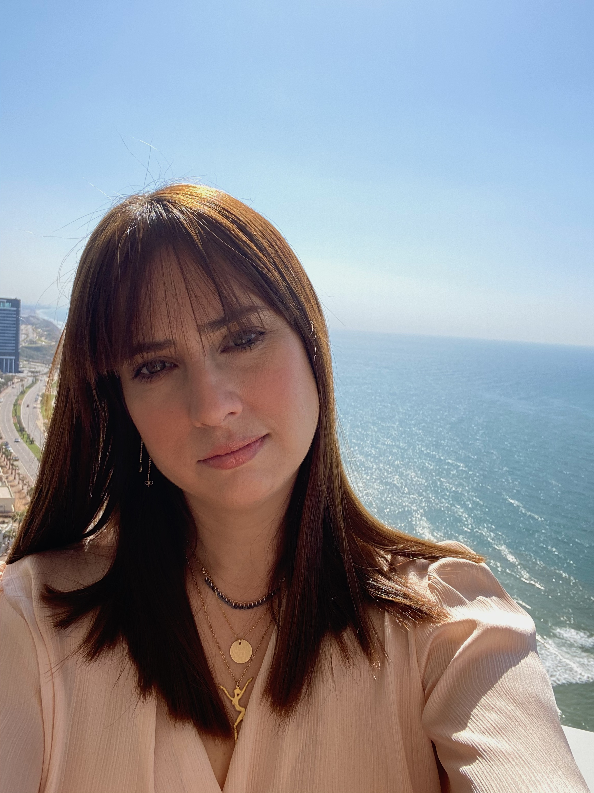

My Resume
Tali Winter-Hubert

Summery
I am an autodidacte lerner, Love the challage of new things, And finding new ways to solve problems.
Education
- 2004-2006: Master's Degree (M.Sc.Agr) in Plant Protection - Faculty of Agriculture, Rehovot.
- 2000-2003: Bachelor's Degree (B.Sc.Agr) in Agricultural Sciences - Faculty of Agriculture, Rehovot.
Work experience
-
Owner and Creator od Delicate Soaps & Candles company
2020-Today
- Created My Own Shopify Store From Scratch.
- Buliding Product Pages as well as collections.
- Writing SEO Content, according to the Google rules and manage to be no 1 in less than a year with my candles Workshops.
- Deliver successful e-malil marketing to my client.
- Conduct effective Google ads and Meta ads.
- Invent and produce natural soaps and candles.
-
VP Business Development at Performance Marketing
2020-Today
- Business consulting for small businesses and establishing digital presence.
- Bulding Business pages on social media.
- Guiding and developing of investment channels in the digital field.
- Marketing and distribution of international products for american companies and adaptation to the israeli market.
Owner and VP Digital at ima4ima, a Lotem company
2018-2020
- Negotiation and closing contracts with a budget of over half a million NIS.
- Managment of marketing and advertising activities and preparation of business plans for each company according to its goals.
- Understand and control of website managment systems:Google analytics, Console, E-Commerce website
-
Product Specialist in the Rare Diseases Division, Medison company
2015-2017
- Workes with PTC and Biogen- Neurovascular area, responsible for new product entry into the 2018 basket.
- Preparation of a business plans according to the companies marketing atrategy.
- Scientific writing for the basket newapaper.
- Buliding specific training programs for the multidisiplinary teams in israel.
-
Medical Representative , Roche pharmaceutical company
2008-2015
- Medical Representative in the Oncology teams
- Medical Representative in tha Nephrology teams
Certifications and Skills
- The Complete 2024 Web Development Bootcamp
- Emergency Medical Technicians - Magen David Adom
- Strategic negotiation and skills - Coursera
- PPC - Paid promotion on Google and Facebook Udemy
- Facebook- Ad management and marketing Udemy
- Google Analytics-Google
- Organic promotion and marketing-Google
languagee:
- Hebrew- native
- English- Full proficiency
Other